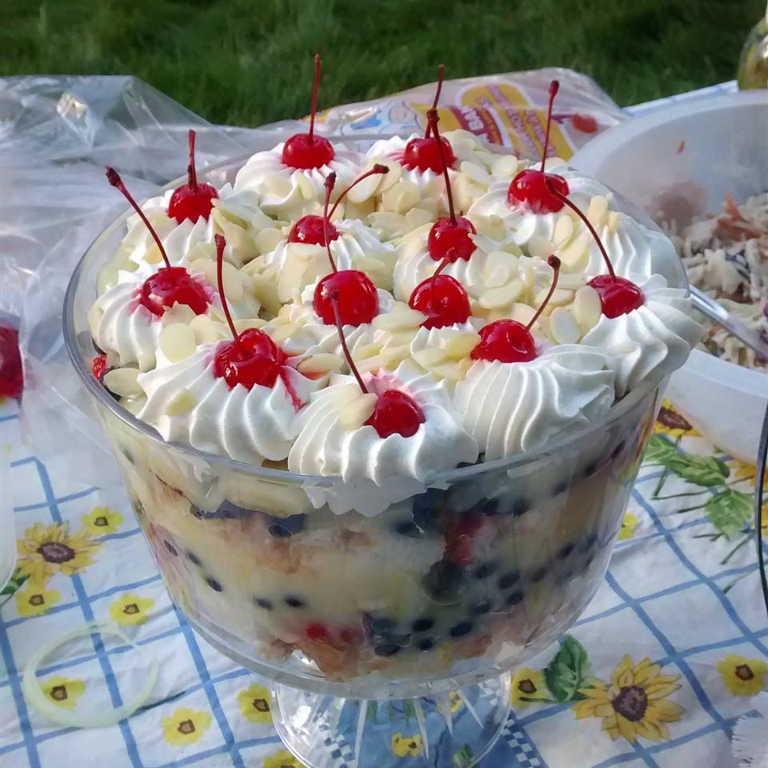

English Trifle

Description
Trifle is a layered dessert found in British and other cuisines. Made with a thin layer of sponge fingers commonly soaked in sherry or another fortified wine, custard and a fruit element (fresh, or jelly), the contents of a trifle are highly variable; many varieties exist, some forgoing fruit entirely and instead using other ingredients, such as chocolate, coffee or vanilla. The fruit and sponge layers may be suspended in fruit-flavoured jelly, and these ingredients are usually arranged to produce three or four layers. The assembled dessert can be topped with whipped cream, or, more traditionally, syllabub.
Ingredients
- 2 (8 or 9 inch) white cake layers, baked and cooled
- 2 pints fresh strawberries
- ¼ cup white sugar
- 1 pint of fresh blueberries
- 2 bananas
- ¼ cup orange juice
- 1 (3.5 ounce) package instant vanilla pudding mix
- 2 cups of milk
- 1 cup of heavy whipping cream
- ¼ cup blanched slivered almonds
- 12 maraschino cherries
Steps
- Slice strawberries and sprinkle them with sugar. Cut the bananas into slices and toss with orange juice. Combine pudding mix with milk and mix until smooth. Cut the cake into 1 inch cubes.
- Use half of the cake cubes to line the bottom of a large glass bowl. Layer half of the strawberries followed by half of the blueberries, and then half of the bananas. Spread half of the pudding over the fruit. Repeat layers in the same order.
- In a medium bowl, whip the cream to stiff peaks and spread over top of trifle. Garnish with maraschino cherries and slivered almonds.
Home